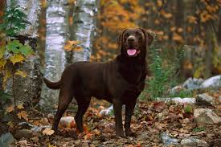

Adopt a Labrador
Loyal Hearts, Wagging Tails – Adopt a Labrador Today!
Learn About Us
We’re a passionate group of Labrador lovers who believe every dog deserves a loving forever home. Since 2017, we’ve helped over 500 Labradors find their perfect families. Whether it’s a playful puppy or a calm senior, we work closely with shelters, fosters, and vets to ensure our Labs are healthy, happy, and ready for their next chapter. We also offer post-adoption support to help your new best friend settle in smoothly.
Why Labradors?
🐾
Gentle Temperament
Labradors are famously kind and great with kids, seniors, and other pets.
Labradors are famously kind and great with kids, seniors, and other pets.
🧠
Highly Trainable
They’re smart and eager to please—perfect for families, therapy work, or first-time dog owners.
They’re smart and eager to please—perfect for families, therapy work, or first-time dog owners.
🎾
Playful Energy
Labs love outdoor adventures, fetch games, and swims. Great for active families!
Labs love outdoor adventures, fetch games, and swims. Great for active families!
❤️
Loyal Companions
They form strong bonds with their humans and offer endless love and emotional support.
They form strong bonds with their humans and offer endless love and emotional support.
🏡
Adaptable
Whether you live in a house or an apartment, Labradors adjust well with regular walks and affection.
Whether you live in a house or an apartment, Labradors adjust well with regular walks and affection.
🐶
Great Family Dogs
Their friendly and social nature makes them a favorite breed among families around the world.
Their friendly and social nature makes them a favorite breed among families around the world.
Labrador Gallery
Black Labrador

White Labrador

Brown Labrador